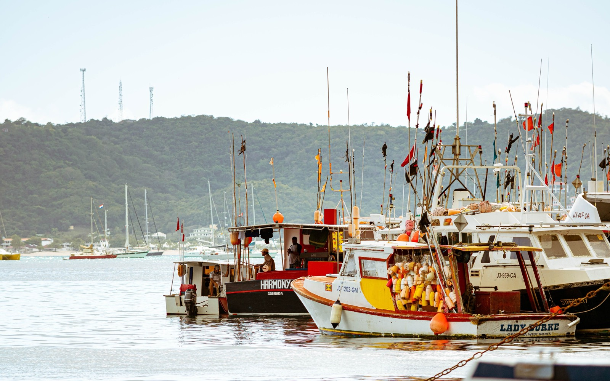
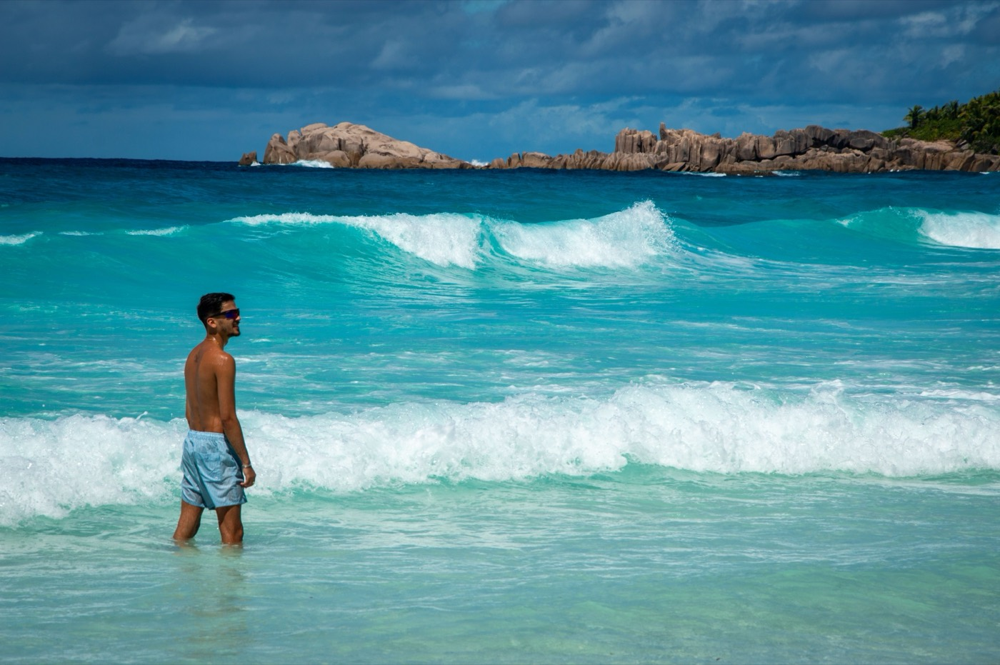

Moving to Grenada in 2026
The 'Spice Isle' — one of the safest Caribbean nations, a second passport from $235K, and the region's only citizenship with a US E-2 business-visa treaty. Here's the cost, the residency, and the fine print.

Grenada punches above its size. The 'Spice Isle' is one of the lowest-crime nations in the Caribbean, its currency is pegged to the US dollar, it charges no tax on foreign income, and its citizenship-by-investment program has a feature no other Caribbean passport does: a US E-2 investor-visa treaty. For the right person, that combination is genuinely unique.
Citizenship by investment & the E-2 advantage
Grenada grants citizenship in about 6 months, remotely, with no residency requirement:
- National Transformation Fund donation: from $235,000.
- Real estate: from $270,000 (shared) or $350,000 (single), plus a $50,000 government fee, held five years.
- The E-2 edge: Grenada is the only Caribbean CBI with a US E-2 treaty — a Grenadian passport lets you apply to live and run a business in the US on an E-2 visa. (Caveat: those who acquire citizenship by investment must be domiciled in Grenada for 3 continuous years before filing.)
The passport carries visa-free access to ~162 countries including the UK and Schengen.
Cost of living
Comfortable and affordable. A single expat budget of $1,800–$3,000/month covers a good lifestyle including rent; frugal singles manage closer to $1,000. The EC dollar is pegged at 2.70 to US$1 (no exchange risk), and — key for retirees — foreign income (Social Security, pensions, US investments) isn't taxed by Grenada. Imported goods run 30–60% above US prices.
Is Grenada safe?
Yes — one of its strongest cards. Grenada has one of the lowest crime rates in the Caribbean; violent crime against foreigners is rare, and most retirees report feeling safe walking day or night. Petty crime exists, so use ordinary sense.
Healthcare
The biggest limitation of island life here. Public hospitals handle routine care; for anything complex, expats travel to Trinidad, Barbados, or Miami — so comprehensive international insurance with medical evacuation is essential. Private outpatient visits run $50–$100; local private-clinic memberships ($100–$200/month) are good value for day-to-day care. Dental care is a genuine bright spot.
Where expats actually live

Grenada is tiny (21 × 12 miles), so nothing is far. Most expats settle on the south coast — Grand Anse, Lance aux Épines, and around St George's — within reach of two-mile Grand Anse Beach.
Is Grenada right for you?
- Great fit if: you want a fast second passport, the unique US E-2 pathway, low crime, and no tax on foreign income.
- Think twice if: you need advanced local healthcare, or you're pursuing E-2 via CBI and can't meet the 3-year domicile rule.
Relocating is step one. Owning the home is step two.
SORA designs and builds homes across the tropics — with our deepest roots in Panama and Costa Rica, where residency is straightforward and building costs a fraction of the coastal Caribbean. If your move is really about a place of your own in the sun, it is worth seeing what a fixed-price build looks like before you commit to any one island.
Frequently asked questions
How much is Grenada citizenship by investment?
From $235,000 via a National Transformation Fund donation, or from $270,000 (shared) / $350,000 (single) in approved real estate plus a $50,000 government fee held five years. Citizenship is granted in about 6 months with no residency requirement, and the passport reaches ~162 countries visa-free.
What is the Grenada E-2 visa advantage?
Grenada is the only Caribbean citizenship-by-investment country with a US E-2 investor-visa treaty, so a Grenadian passport lets you apply to live and run a business in the US on an E-2 visa. Important caveat: applicants who obtained citizenship by investment must be domiciled in Grenada for three continuous years before filing the E-2.
Is Grenada safe?
Yes — Grenada consistently ranks among the safest nations in the Caribbean, with very low violent crime against foreigners. Most retirees report feeling safe day or night; petty crime exists as anywhere, so use normal precautions.
Does Grenada tax foreign income?
No — Grenada does not tax foreign income, so Social Security, pensions, and US investment income are not taxed there (your home-country obligations still apply). The EC dollar is pegged at 2.70 to US$1, removing exchange-rate risk.
Sources & verification
Figures in this guide were checked against primary and authoritative sources on 27 July 2026. Immigration, tax, and cost figures change — always confirm the current rules with the official body or a licensed professional before acting.
- Grenada Citizenship by Investment Committee — official CBI program authority
- US State Department — Grenada — travel advisory (Level 1)
- Global Citizen Solutions — Grenada — corroborating CBI/E-2 & cost data